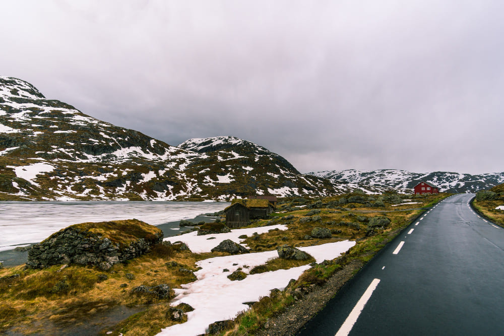

- 

All three images were taken from freepik
- Beautiful shot of snowy Norwegian landscape
- Beautiful view of buildings on the shore near Alesund, Norway with high mountains
- Calm lake at Norwegian national park surrounded with big mountains and gloomy weather
CSS filters used:
- Blur at 4px
- Invert at 100%
- Sepia at 80%